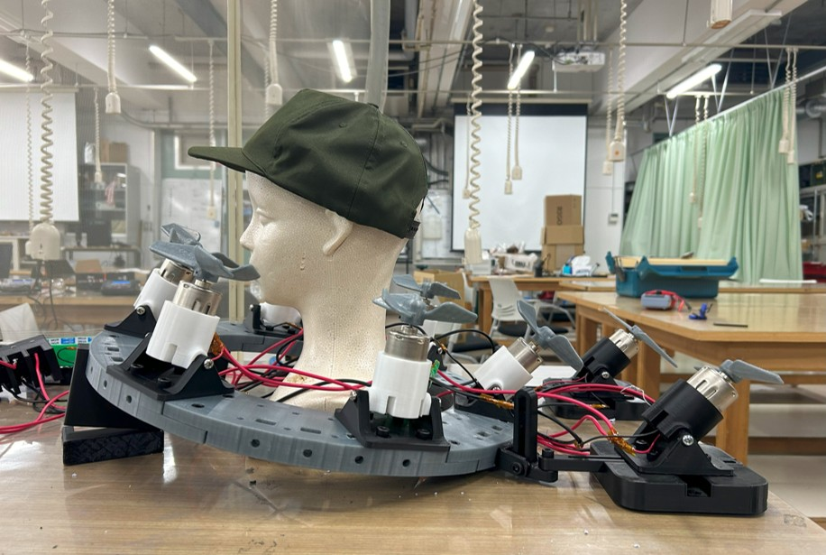

Overview
In a university course focused on extreme modifications, I worked on adapting a neck-fan to propel a hat on a mannequin as far as possible. I designed the hardware and led a cross-disciplinary team of six. In the final demonstration, we successfully blew the hat over 2 meters—winning first place.
